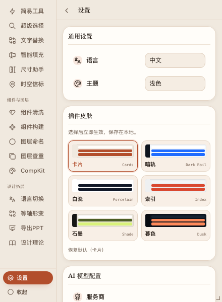
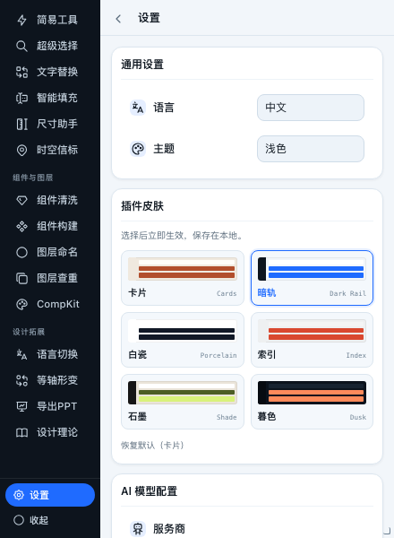
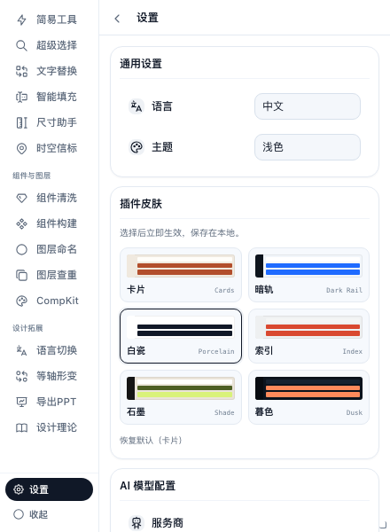
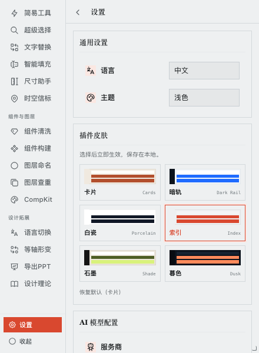
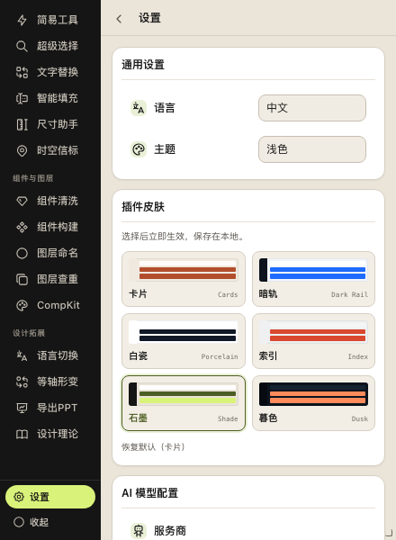
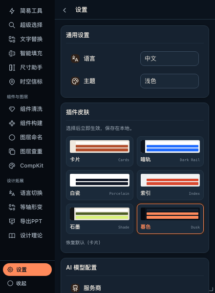

设置里的六套皮肤
同一张设置页，只换皮肤：圆角、控件形状、当前项和材质都跟着换，信息结构不动
SETTINGS

卡片 / Cards
2 列 · 圆角 16
赤陶胶囊 · 白色设置卡

暗轨 / Dark Rail
3 列 · 圆角 10
电蓝胶囊 · 常暗侧轨

白瓷 / Porcelain
3 列 · 圆角 10
墨黑胶囊 · 纯白细线

索引 / Index
2 列 · 全方角
朱红方角 · 细线设置卡

石墨 / Shade
3 列 · 圆角 12
柠檬胶囊 · 骨白设置卡

暮色 / Dusk
2 列 · 圆角 10
珊瑚胶囊 · 深色设置卡